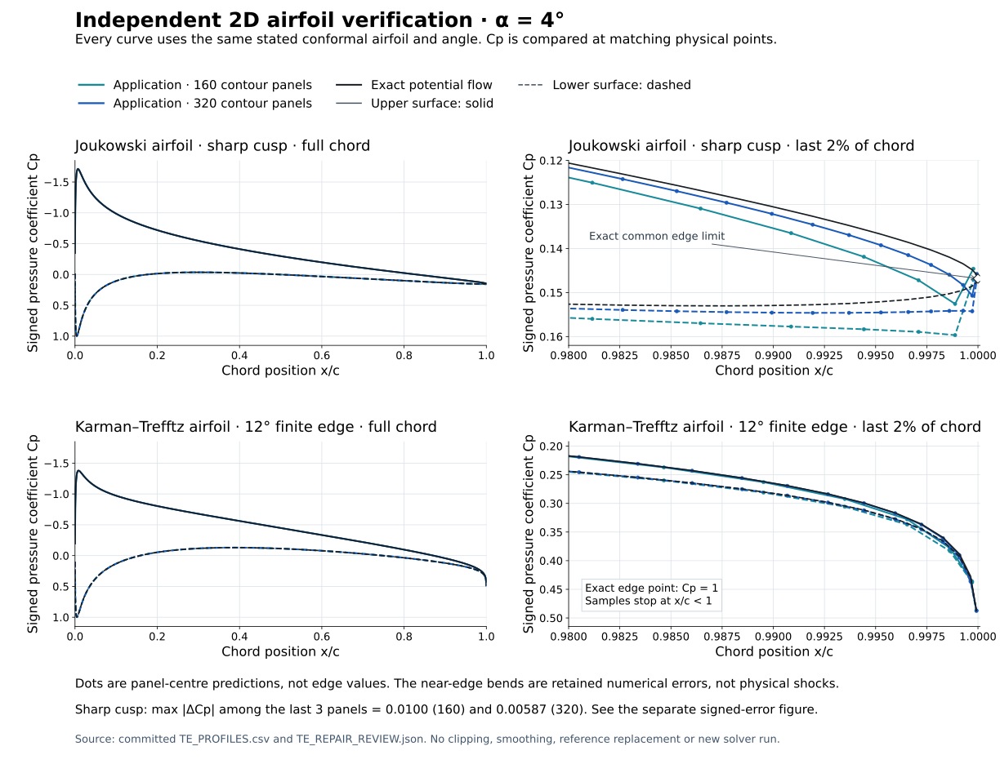
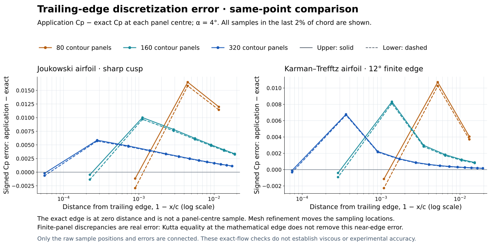
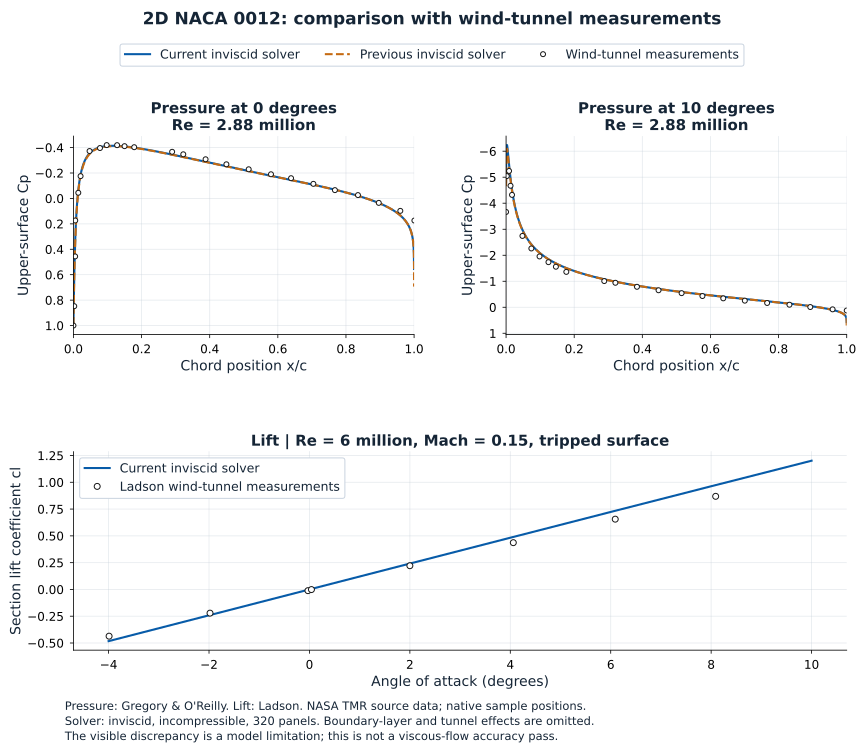
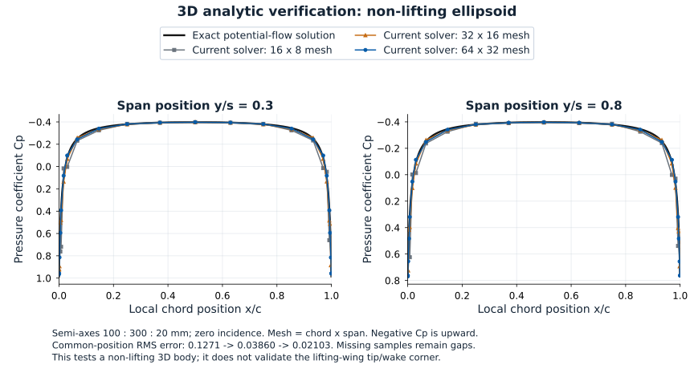
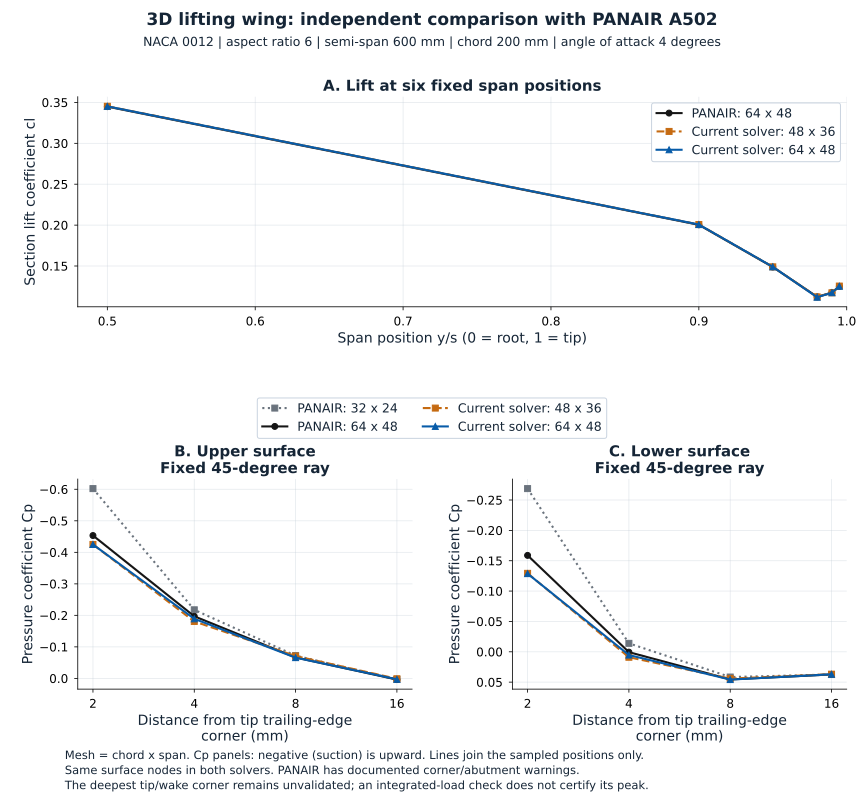
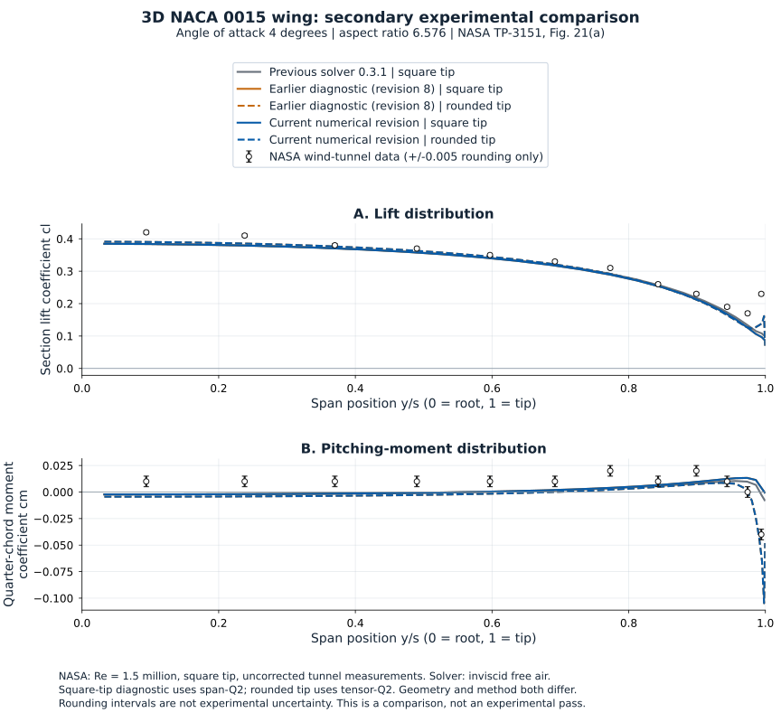

← Wing AeroStructNumerical validation
29 October 2026 · 2D airfoil and finite-thickness 3D wing · reproducible tests and signed physical profiles
Version-specific scope. The reviewed 3D tensor-quadratic revision 0.3.2-exp.4 is released as a qualified educational update (source 17bdcbe). Independent 2D airfoil analysis remains 1.1.0. Integrated-load verification does not certify the deepest local tip pressure, viscous flow or structural strength.
2D airfoil: repaired trailing edge
The released independent 2D solver is version 1.1.0. Exact Joukowski-cusp and 12° Karman–Trefftz flows test the complete pressure profile at matching physical points, four angles (−4°, 0°, 4°, 8°) and 80/160/320 total panels. The main figure shows the repaired solver; superseded defect plots are kept separately as historical diagnostics.

α = 4°. Solid = upper surface; dashed = lower surface. Dots mark computed panel centres. The diamond is the exact common cusp-edge limit, not a computed edge sample. Near-edge discrepancies remain visible; no computed pressure is smoothed or replaced.
At α = 4°: errors below compare each computed Cp with exact Cp at the same physical panel centre.
| Profile | Panels | |Δcl| | Cp RMS, 2–98% chord | Last-panel |ΔCp| | Last 3 panels, max |ΔCp| |
|---|
| joukowski (cusp) | 80 | 0.000175 | 0.00278 | 0.00293 | 0.0165 |
| joukowski (cusp) | 160 | 4.99e-05 | 0.000739 | 0.00135 | 0.01 |
| joukowski (cusp) | 320 | 1.31e-05 | 0.00022 | 0.00064 | 0.00587 |
| karman-trefftz 12 deg (finite wedge) | 80 | 0.00018 | 0.00144 | 0.00227 | 0.0107 |
| karman-trefftz 12 deg (finite wedge) | 160 | 5.21e-05 | 0.000388 | 0.000921 | 0.00832 |
| karman-trefftz 12 deg (finite wedge) | 320 | 1.38e-05 | 9.27e-05 | 0.000328 | 0.00678 |
For the 320-panel cusp at 4°, last-panel error falls from 0.531 to 0.000643. Interior Cp RMS is 0.000220 and lift error is 0.0000131. The second panel from the edge retains a small, slowly converging error; the last-three-panel column prevents that from being hidden by an interior statistic.

The remaining bends are genuine discretization error, not physical pressure jumps. For the sharp cusp, maximum |ΔCp| among the last three panels falls from 0.0165 to 0.0100 to 0.00587 under refinement. Panel centres move with refinement; the exact mathematical edge is not one of those samples.
Formulation, residuals and integration
Linear vortex-sheet strength is solved using a constant stream function at contour nodes, the Kutta condition and an interior trailing-edge-bisector condition. This removes the spurious interior edge jet of the previous midpoint-only formulation. A sharp cusp has a common finite upper/lower Cp limit at the mathematical edge; separate finite-distance panel-centre values need not be equal. An exact finite wedge approaches stagnation only at its edge point. Neither statement removes the actual same-point numerical error shown above or warrants manually setting the last computed Cp.
Zero net panel flux is a discrete boundary condition, not a claim that pointwise penetration vanishes everywhere. System / mean-flux residuals and midpoint normal-velocity residuals are reported separately. The latter is about 0.0014 V∞ at 320 panels in the cusp test. Public cl/cm retain midpoint-pressure quadrature; the API also reports exact quadratic-pressure integration and panel couples. Both are recorded in the raw results.
The original tests pass unchanged; independent focused tests include reversal of contour order and sensitivity to the interior closure location. Midpoint normal-velocity residuals and remaining near-edge errors are not renamed as exact accuracy. Source adaptation and the retained MIT notice are listed in third-party notices.
Repaired profiles PDF · Full exact-reference results · All signed Cp samples · Orientation / closure checks.
Independent software: XFOIL
Official MIT XFOIL 6.99 was executed locally, inviscid / Mach zero, using PCOP to preserve the exact supplied contours. The table compares repaired 2D results with the actual XFOIL runs. Its nodal Cp and the application’s segment-centre Cp are different sample locations; no equality is inferred from an overlaid picture.
2D cl is not whole-wing CL. Here cl = L′/(q∞c) for an isolated unit-chord airfoil; whole-wing CL = L/(q∞S). The NACA 2412 value ≈0.742 below belongs to the stated 2D, 4° case. A finite-wing value near 0.64 is a different quantity and boundary-value problem, with spanwise interaction and downwash. These table values are reference comparisons, never targets fitted to the current wing.
| Case / panels / α | 2D application cl | 2D XFOIL cl | 2D application cm¼ | 2D XFOIL cm¼ |
|---|
| NACA 0012 · 160 · 4° | 0.4826869 | 0.4825000 | -0.0054621 | -0.0054000 |
| NACA 0012 · 320 · 4° | 0.4826466 | 0.4824000 | -0.0054435 | -0.0054000 |
| NACA 2412 · 160 · 4° | 0.7416760 | 0.7413000 | -0.0612280 | -0.0612000 |
| NACA 2412 · 320 · 4° | 0.7416633 | 0.7412000 | -0.0612128 | -0.0611000 |
Which section result should I compare?
Independent 2D airfoil extracts the local airfoil shape at η = y / projected semi-span and solves it at the entered angle. The same normalized profile, angle and mesh give the same inviscid Cp even at different chords; adding a rib, rod or spar does not change this isolated fluid problem. It has no wing downwash or Reynolds-number model.
3D wing · sectional Cp reads an actually solved strip from the finite-wing pressure field, including spanwise interaction. Its selector reports that strip’s physical y; it is not a new isolated-airfoil solve. Compare the same geometry, angle, flow assumptions and normalization. A root/tip change in 3D Cp therefore need not appear in the independent 2D result.
Official Win32 XFOIL itself oscillates on the cusped test and one run has unreadable output. Exact conformal flow, rather than that unstable reference run, determines cusp accuracy. These reference failures remain recorded.
Historical defect diagnostics — previous 2D solver, not current validation
The superseded plots document the discovered defect and are excluded from the main presentation: previous exact-reference figure · previous cusp / XFOIL diagnostic · original raw reference runs. They are retained for traceability and must not be presented as results of 2D version 1.1.0.
Experimental comparison: NACA 0012
Upper-surface Cp is compared with Gregory & O’Reilly (R&M 3726), Re = 2.88 million, α = 0° and 10°. Lift is compared with Ladson (NASA TM 4074), Re = 6 million, M = 0.15, 180-grit tripped data. The official NASA TMR digitizations are retained at their original sample positions; their approximate digitization and different test conditions remain applicable.

Experimental points are open circles; continuous curves are solver predictions. Cp and lift come from different experiments and are identified separately. No synthetic experimental curve is inserted.
The incompressible inviscid model agrees reasonably with much of the pressure distribution but overpredicts the leading-edge suction peak at 10° and the measured lift slope. Near 4°, predicted cl ≈ 0.49 versus measured 0.4365: about 12% higher. Lift RMS discrepancy over the declared −4° to 10° comparison interval is 0.0534. This is a model limitation, not a demonstrated viscous-flow validation pass. No boundary-layer, roughness, tunnel or Mach correction was fitted to reduce it.
Application geometry is its standard closed-edge NACA 0012. The measured model has the conventional NACA profile; the thin trailing-edge closure differs slightly. The altered NASA TMR CFD geometry is not substituted and presented as the measured specimen. No stall or viscous-drag validation is claimed. The separate 3D experimental comparison below is not labelled an accuracy pass.
Experimental figure PDF · Comparison data · Source files / hashes · Measured Cp · Measured forces · Official NASA TMR experimental-data description.
3D wing: analytic verification and independent-code comparison
3D evidence is available as well as 2D airfoil evidence. The exact 3D test checks a non-lifting ellipsoid. The lifting-wing test compares pressure profiles, lift, induced drag and moment with independently executed PANAIR A502.
Accuracy demonstrated for the reference wing: at the 64 x 48 mesh setting (chord x span), pressure-integrated lift differs from PANAIR by 0.060%; Trefftz lift by 0.077%; induced drag by 0.071%. These are reference-code discrepancies for one NACA 0012 wing at 4 degrees, not guaranteed errors for every wing.
Remaining limits: deepest local tip pressure is unvalidated. The NASA finite-wing experiment below is a secondary comparison with different tip/tunnel assumptions, not an experimental accuracy pass. Structural contours are nominal beam results.
The default method uses a continuous tensor-quadratic doublet representation, a physical P2 polynomial on each surface triangle, and velocity from the gradient of that same field. Quadratic pressure forces and their panel couples are integrated together. The eight-mesh Standard/Fine sequences include a mixed chord/span correction. Old seven-mesh JSON loads remain readable and keep their original combination.

Non-lifting exact solution. Common-position Cp RMS falls from 0.1271 to 0.03860 to 0.02103 as the mesh is refined. This is not a lifting-wing corner test.

Same-node rectangular NACA 0012 wing, chord 200 mm, semi-span 600 mm, α = 4°, AR = 6. Samples are retained at their physical locations. PANAIR runs carry documented corner/abutment warnings; only the two non-defective reference runs are used.
| Quantity, 64 × 48 mesh | Application | PANAIR | Relative difference |
|---|
| Pressure-integrated CL | 0.315338 | 0.315150 | 0.060% |
| Trefftz CL | 0.316937 | 0.316693 | 0.077% |
| Trefftz CDi | 0.00541381 | 0.00540999 | 0.071% |
| Span efficiency | 0.984334 | 0.983512 | 0.084% |
Moment comparisons use the same quadrature rule for both codes as well as each code’s own pressure integral. With a common rule, the Cm difference falls from 1.84 × 10⁻⁴ to 6.76 × 10⁻⁵ under refinement. Exact Karman–Trefftz section wings at aspect ratios 20, 40 and 80 provide a separate moment check. These case-specific comparisons do not establish sub-percent accuracy on every planform.
3D experimental comparison: NASA NACA 0015 wing (limitations apply)

NASA TP-3151, Fig. 21(a): NACA 0015, α = 4°, Re = 1.5 million. The measurements are uncorrected tunnel data with a square tip; the application is inviscid free-air potential flow. The square-cap diagnostic uses span-quadratic doublets and the rounded tip uses tensor-quadratic doublets. The curves therefore do not isolate geometry from discretization. Rounding intervals are not experimental uncertainty. Disagreements, including the outer stations and moment offset, remain visible. This is a comparison, not an experimental validation pass. NASA report · Data.
Checks, uncertainty and intended use
The independent external/analytic suite passes 48 checks. Kernel, tensor, Trefftz, load-transfer and same-host legacy-JSON checks also pass. The original cross-term suite retains one expected-value mismatch of 2.17 × 10⁻¹⁸ in a legacy uncertainty on Windows/Node24; its assertion was not relaxed. Same-machine comparison with the actual published writer reproduces every legacy strip, coefficient and uncertainty exactly.
A separate seven-wing study records all 252 quantity checks. Against its original cross-corrected references, 251 fall within U and 242 pass the stricter test including reference uncertainty. Its failed rows remain failed. The largest disputed resolved torque was traced to nonlinear extrapolation of nearly cancelling moment components, not to the computed pressure field. At the fixed swept-wing cut, independent native-pressure runs reproduce 17 author meshes within 7.1 × 10⁻¹⁰ N·mm. A joint-refinement reference gives 1.1337 ± 0.0284 N·mm versus delivered 1.1119 ± 0.0676 N·mm; the stricter discrepancy including reference uncertainty is 4.5%, below the unchanged 10% criterion.
U is an empirical estimate, not a guaranteed error bound. Other strict-U misses in washout/combined-angle reference cases were not re-adjudicated. Original stored references, failed tests and older 3D reports are retained. No tolerance was relaxed, no pressure value clipped or smoothed, and no geometry trimmed to improve agreement.
Local tip pressure remains unresolved. The deepest rounded-tip / trailing-edge corner and collapsed final strip are not pointwise validated. Fixed-position and integrated-region convergence do not validate a moving panel extremum. Rounded-tip samples are marked in the plots and section selector. Torque and twist are withheld when the admission check cannot resolve them.
Intended use: steady symmetric, incompressible, inviscid attached flow over a rigid wing with a prescribed flat wake. No stall, separation, profile/viscous drag, rolled-up wake or aeroelastic iteration is predicted. Structural contours are nominal beam stresses; local shell/solid stresses and strength are not certified. On the tested 900 mm example, one Chromium Fine run took 22.3 s for eight meshes and the structural transfer 1.79 s. Fresh standalone Node runs took 7.88 s Standard and 25.56 s Fine; these are individual runs, not universal timing guarantees.
Review receipt · All 252 rows · Native fixed-cut analysis · Original study FAIL · 48-check receipt · Preserved previous 3D report.
Data and reproduction
Current 2D figure PDF · Current 3D comparison PDF · Current 2D profiles CSV · Current 2D results · 3D full results · Original test receipts · Independent review
Current exact-edge reproduction script (save under application validation/; OUT selects the output folder) · Off-body samples · Browser timing receipts. Run the 2D reproduction script with Node.js from its saved validation folder; an optional command-line argument selects another application directory. It reads that application's actual source. Version and reference provenance · Separate checkpoint-7 timing · JSON compatibility receipt.
Reference formulations and provenance
PANAIR high-order panel method · MachLine panel formulation · Linear vortex-panel equations. Sharing the potential-flow method family does not establish identical accuracy or copied source code.
Current 3D bundle SHA-256: a7da4dc7c72cb4f1ee6471ebef9104fe1647a72106a5b475f12c27a248caad94. Current core SHA-256: 0b4e7a6165811cb13b69309edec45d5a7d54a0b6d479820aa408de44c10f1344. Numerical source: wing-aerostruct-3d-0.3.2-reviewed-source.zip.